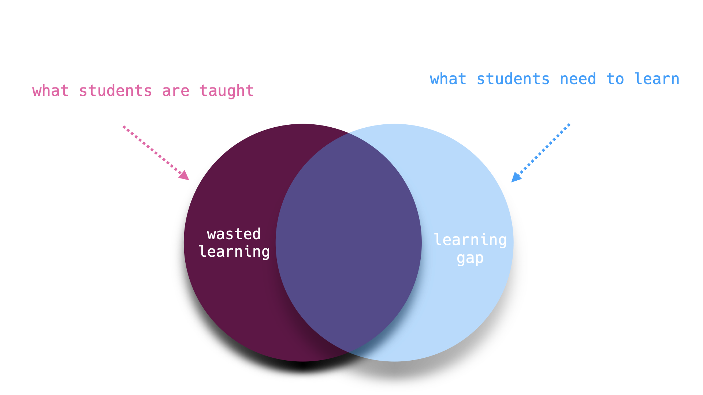

Overview#
Q. How can I prepare for high-paying jobs in Artificial Intelligence and related fields?
A. By enrolling in AI-FastStart.
Get Smart in 2024 with AI-FastStart#
AI-FastStart is designed to equip you with both the business and technical skills essential for securing high-paying jobs in the new economy. Fast Start means we prepare you quickly and cost-effectively because you don’t have time to lose and money to waste.
{kind=link}
Why AI?#
The consensus view among economists is that Artificial Intelligence (AI) will be the primary engine of economic growth and innovation for at least the next decade. The majority of high-paying jobs will be in AI and related sectors. According to a recent study by McKinsey, AI is likely to add trillions of dollars in value to the global economy. (McKinsey & Co, The economic potential of generative AI, June 2023)
According to a leading economist, Erik Brynjolfsson, Stanford Professor and Director of the Stanford Digital Economy Lab, many of the crucial jobs and opportunities will be for managers and business leaders who understand and can harness the potential of AI.
Erik Brynjolfsson: ”Managers who know how to use machine learning will replace managers who don’t”.
Why AI-FastStart?#
AI-FastStart represents an alternative to “Business-as-Usual-Learning.” By “Business-as-Usual-Learning” we mean acquiring practical skills through traditional pathways or the plethora of expensive programs. The problem with both approaches is that you don’t learn everything you need (“learning gaps”) and acquire a lot that you don’t need (“wasted learning”).
{kind=link}
With “Business-as-Usual-Learning” you can end up spending tens of thousands of dollars and hundreds of hours in class, only to find out much later, after all the expense and effort, that you are saddled with debt and don’t have the practical skills you need to move forward. Instead of making a long term commitment to an uncertain program that might not be the right fit for you, maybe it’s time to ask if there is a better way?
{kind=link}
What is AI-FastStart?#
AI-FastStart program consists of a set of online bootcamps.
The bootcamps emphasize foundational knowledge and practical skills. At each step, you learn just enough of what you need to know and then apply the learning towards practical results. Finally, you should reflect and integrate your experience towards your larger journey. At each stage, you decide whether you are learning and whether you are ready to move forward.
{kind=link}
How does AI-FastStart Work?#
The center piece of AI-FastStart is a series of bootcamps.
Each bootcamp is conducted by a live instructor on Zoom.
Participation and interaction is highly encouraged during the sessions.
To protect your privacy, you may keep the video on or off.
A recording of the sessions is available to all participants.
Participants get access to AI-FutureMinds Academy for follow-up questions and additional learning resources, including a workbook to chart progress.
If you are dissatisfied for any reason, each bootcamp comes with full money back guarantee. No questions asked.
{kind=link}
AI-FastStart programs are designed to accommodate both business and technical professionals, particularly those aspiring to leadership positions in product management, technology strategy, AI-based startups, innovation management, and digital transformation.
How do I Start? #
Our first AI FastStart program is Python Foundations. Please see the menu for an overview and detailed description of the Python Foundations curriculum and how to enroll.